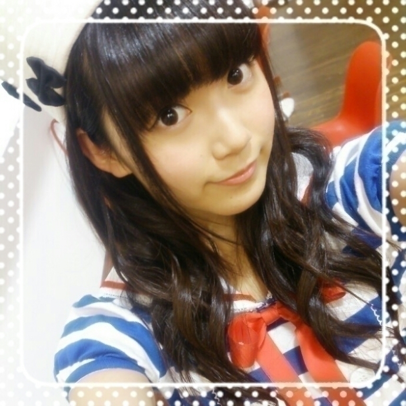
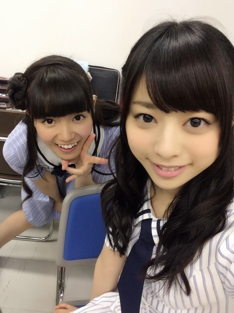
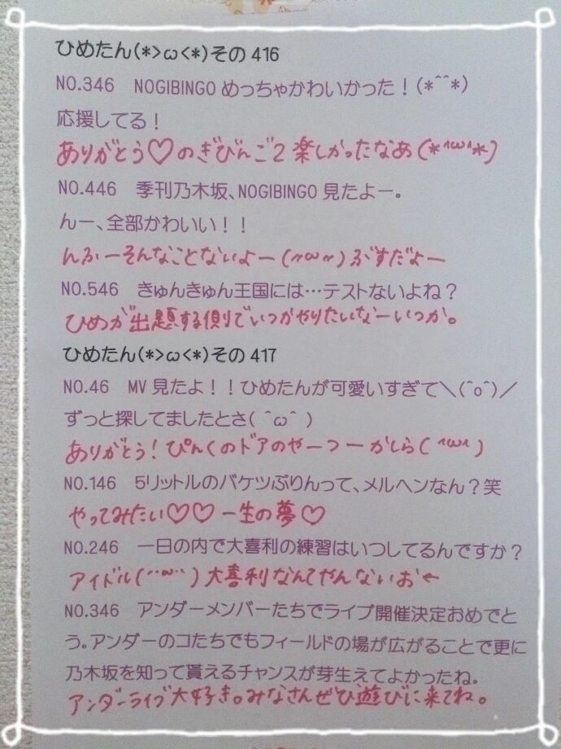

| 2014/07 31 Thu | ひめたん-OoO-その465 |
そふとくりーむぺろぺろ
あしゅりんぺろぺろ

次回の乃木ののは
齋藤飛鳥ちゃん
川後陽菜ちゃん です☆
お楽しみに！
乃木ののから特別企画のお知らせ((( ˆωˆ )))
乃木坂46の「の」で喋って欲しい
トークテーマを募集します
あれ、これふつおたコーナーと同じじゃない？と
思ったそこのあなた！！
ちゃいます！同じじゃないです！ちゃうんです！
今回は特別企画とゆーことで
「喋って欲しいメンバーのリクエスト」もします！
詳しくは
乃木坂46の「の」公式サイトに
アクセスしてみてください☆

生写真「マリン」
8月2日は個別握手会！
1部～4部に参加するよ(＊^ω^＊)
1部に来てくれるひとは
お寝坊しちゃだめだからねー？
4部に来てくれるひとは
ひめたん4部になったの最近だから
時間間違えないように気を付けてねー
久々の東京ビッグサイト
楽しみに待ってます♡
さらに乃木坂46SHOW第3弾オンエア日！
握手会行くぜよってひとは
忘れずに録画してからおうち出るんだよー
お留守番ちーむのひとは
ぜひ画面越しのひめたんに
手を振ってみてくださいにゃ⊂( ˆoˆ )⊃
あ、明日は金曜日だから
のぎ天更新日だね！
もう#4ですって、はやーい！
観たら感想まってるよー
#3まだ観てないぞーってゆひともはやく観てねー
ちなみにひめたんまだ観てない( ´;O;` )うう
ぴーす

ねねちゃん
今日みんなでパン屋さんの話で
盛り上がったよ！
ひめたんねーちっちゃい頃ねー
パン屋さんになりたかったんだー
あーそれねー
誰もが一度は通る道だよねー
あたしは今でもパン屋さんになりたいよー
みたいな( ˘ω˘ )
ひめたんの二の腕には
愛と夢とりぼんが詰まってるって
いこたんが言ってたよ！

 乃木坂でスクフェスやってる
乃木坂でスクフェスやってる
(またはやってない)人は誰ですか〜？？
どっち答えたらいいのん(´・ω・｀)笑
やってる人は ずーさん、あすかりん、
愛未、ちーちゃん、ゆったん、きいちゃん
は知ってるよ！もうちょいいるかも。
僕は映画が好きで特にホラーが好きなんやけど、
ひめたんはホラーとか見れるー？
自分から好んで観ないかなあー
でも愛未、かなりん、ねねのやつは観たい！
なんかうちわに入れて欲しい文字とか、
うちわでこうゆうの嬉しい！とかゆうのある？
ひめたんってわかれば
何でも嬉しいよー(﹡֦ƠωƠ֦﹡)♡
ライブ楽しみにしてるね！
自分で文字貼ってつくったうちわ
もってってもいいの？
それとも公式じゃないとやめたほうがいいのかな
公式のやーつもあるんだよねー
どっちでもおっけーだよ(﹡֦ƠωƠ֦﹡)るん
こないだ急に僕のメガネのレンズが
外れたんだけど、これって僕の目からも
ひめたんびーむが出てるのかな？
中二......なんでもないです
それ大丈夫なのー
何があったのーてかウソはやめてよおおおん
ひめたんはそうめん派？
それとも冷やし中華派？
そうめん派！
冷やし中華ならごまのやつがいいです
酸っぱいのはちょっと苦手です
今度、イベントいって、
ひめたんにあいにいってもいいー？
わーい(﹡֦ƠωƠ֦﹡)待ってるー！
まりっかが、きゅんきゅん王国のみんなに
ブラックひめたんの件で助けを求めてるけど(笑)
手を差し伸べてあげた方がよいのかな？
俺的にはきゅんきゅん王国のお姫様に
いじられるなんて羨ましい限りなのだが(笑)
ブログのやつはフリでしょー(笑)
万理華はいじられるの嬉しい人だから
愛を持っていじってあげてね( ˆωˆ )けっ
愛を持って、だからね、これ大事♡
ひめたんの日記の
コメント欄下２ケタに46を踏んだ方へ
手書きでコメ返するコーナー
＼ ひめたん46 ／


3月のやつ！
いつもたくさんのコメント
ありがとうございます
めーるのお返事も嬉しいー♪
髪型のリクエストいっぱいありがとう♡
あ、ちなみに
おでこ出してーってのはちょっと厳しいかな(￣ω￣)
いや、違うのよ、
ここまで頑なにおでこ出さないのは
もちろん理由があるのよ
多分ね、
でこだしひめたん見た瞬間に
7割のひとは幻滅すると思うの
いやこれまじだから！
リクエストしたこと
後悔するから！まじで！
(＊´・ω・＊)
コメント(578)
2014/07/31 23:54